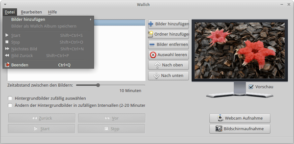
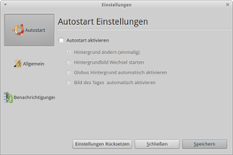
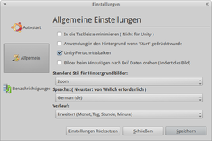
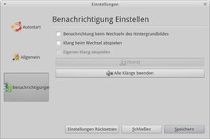

Wallch
Dieser Artikel wurde für die folgenden Ubuntu-Versionen getestet:
Ubuntu 16.04 Xenial Xerus
Ubuntu 14.04 Trusty Tahr
Zum Verständnis dieses Artikels sind folgende Seiten hilfreich:
Wallch  (Wallpaper changer) ist ein Programm für GNOME, das im Hintergrund läuft und automatisch das Desktop-Hintergrundbild wechselt. Es können einzelne Bilder oder auch ganze Ordner hinzugefügt werden. Das Hintergrundbild kann entweder in einem festgelegten Intervall oder nach einem zufällig gewählten Zeitraum gewechselt werden.
(Wallpaper changer) ist ein Programm für GNOME, das im Hintergrund läuft und automatisch das Desktop-Hintergrundbild wechselt. Es können einzelne Bilder oder auch ganze Ordner hinzugefügt werden. Das Hintergrundbild kann entweder in einem festgelegten Intervall oder nach einem zufällig gewählten Zeitraum gewechselt werden.
Alternativ kann Wallch statt eines Bilds ein Live Earth Wallpaper anzeigen. Das Bildmaterial wird von die.net zur Verfügung gestellt. Wer sich an der Erde satt gesehen hat, lässt sich vom Bild des Tages  der Wikimedia überraschen. Voraussetzung für beide Funktionen ist eine aktive Internetverbindung.
der Wikimedia überraschen. Voraussetzung für beide Funktionen ist eine aktive Internetverbindung.
Die Anwendung funktioniert (im Gegensatz zu ähnlichen Programmen) einwandfrei mit Unity und der GNOME Shell. Die Unterstützung weiterer Desktop-Umgebungen wie MATE, Xfce und LXDE ist ab Version 4.0 enthalten, die ab Ubuntu 14.04 verfügbar ist. Ein anderes Projekt des Entwicklerteams ist das Programm Format Junkie.
Installation¶
 Das Programm ist ab Ubuntu 11.10 in den offiziellen Paketquellen enthalten und kann über das folgende Paket installiert [1] werden:
Das Programm ist ab Ubuntu 11.10 in den offiziellen Paketquellen enthalten und kann über das folgende Paket installiert [1] werden:
wallch (universe)
 mit apturl
mit apturl
Paketliste zum Kopieren:
sudo apt-get install wallch
sudo aptitude install wallch
Verwendung¶
Bei Ubuntu-Varianten mit einem Anwendungsmenü kann das Programm über den Eintrag "Zubehör -> Wallch" gestartet [2] werden. Unter Unity gibt man einfach den Programmnamen ein. Wenn die Systemsprache nicht automatisch erkannt wird, die Spracheinstellungen aufrufen und die bevorzugte aktivieren.
Eine umfangreiche englische Dokumentation zum Programm ist über die Taste F1 abrufbar.

Bilder oder Bilderordner hinzufügen¶
Entweder über "Datei -> Bilder hinzufügen" oder über die mittig angeordneten Schaltflächen. Statt einzelner Bilder kann man auch gleich einen Ordner hinzufügen, z.B. ~/Bilder/ im Homeverzeichnis. In der linken Spalte werden nun die zu berücksichtigten Bilder aufgelistet. Im Programmfenster rechts wird eine Bildvorschau angezeigt.
Statt einer festen Reihenfolge (entspricht der Sortierung der Bilderliste) man das Programm auch anweisen, selbst ein zufälliges Bild auszuwählen.
Intervall¶
Über einen Schieberegler regelt man den Zeitabstand zwischen zwei Bildern. Oder man wählt auch hier die Zufallsfunktion, um irgendwann (zwischen 2 und 20 Minuten) den Bildwechsel automatisch durchführen zu lassen.
Webcam Aufnahme¶
Das ginge zwar auch mit Cheese, Kamoso oder guvcview, aber eine Möglichkeit mehr kann nichts schaden.
Bildschirmaufnahme¶
In das Programm integriert ist ein Screenshot-Werkzeug. Allerdings enthalten bereits alle Desktop-Umgebungen ein Programm, um Bildschirmfotos aufzunehmen.
Einstellungen¶
 Konfigurationsdaten werden im Ordner ~/.config/Wallch/ im Homeverzeichnis abgelegt.
Konfigurationsdaten werden im Ordner ~/.config/Wallch/ im Homeverzeichnis abgelegt.
Sprache¶
Über "Edit -> Preferences" (später dann "Bearbeiten -> Einstellungen") wählt man unter "General" die gewünschte Sprache aus und startet das Programm anschließend neu.
|  |
| Autostart |
|  |
| Allgemein |
|  |
| Benachrichtigungen |
Autostart¶
Wer die Anwendung automatisch nach der grafischen Anmeldung starten möchte, aktiviert diese Option. Des Weiteren kann man festlegen, ob die Zusatzfunktionen Globus Hintergrund oder Bild des Tages (statt eigener Bilder) benutzt werden sollen.
Allgemein¶
Neben den Spracheinstellungen lässt sich z.B. festlegen, ob Bilder automatisch anhand ihrer Exif-Daten gedreht oder welche Bildskalierung (Zoom, Anpassen, etc.) angewandt werden soll. Ist die Option "In die Taskleiste minimieren" aktiv, lässt sich das Programmfenster nicht wie üblich schließen, sondern wird in das Benachrichtigungsfeld minimiert. Die weitere Programmsteuerung erfolgt dann über die rechte Maustaste  .
.
Benachrichtigungen¶
Wallch informiert automatisch über seinen Zustand. Auf Wunsch kann man sich auch bei einem Bildwechsel benachrichtigen lassen sowie akustische Signale verwenden.
Extras¶
Wallch bietet neben der Grundfunktion als Hintergrundwechsler noch einige interessante Extras. Diese sind über "Bearbeiten -> Extras" zu erreichen. Diese können nur exklusiv genutzt werden, also jeweils einzeln (und statt eigener Hintergründe).
Globus Hintergrund¶
Diese auch als "Live Earth Wallpaper" bezeichnete Funktion zeigt eine Art Satellitenbild der Erde inklusive der globalen Bewölkung und des Tag-/Nachtwechsels. Es wird automatisch alle 30 Minuten erneuert.
Hinweis:
Wallch 3.0 enthält in der deutschen Übersetzung noch einige kleinere Fehler. So ist die Schaltfläche zum Aktivieren von Globus Hintergrund mit "Deaktiviere Globus-Hintergrund" beschriftet.
Ordnerüberwachung¶
Wie der Name schon sagt: man gibt einen Ordner vor, dessen Bilder als Hintergrund genutzt werden sollen. Im Gegensatz zum obigen Hinzufügen eines Ordners wird dieser auf Veränderungen überwacht. Praktisch heißt das, neu hinzugekommene Bilder werden automatisch berücksichtigt. Das Gleiche gilt für Bilder, die aus diesem Ordner entfernt werden.
Bild des Tages¶
Hierzu wird auf das jeweilige Bild des Tages der Wikimedia zurückgegriffen.
Sonstiges¶
Suche¶
Über "Bearbeiten -> Suche" lässt sich die Bilderliste nach einem Suchbegriff durchforsten.
1000 Wallpapers¶
Wenn die Festplatte trotz aller Bemühungen einfach nicht voll werden will, kann man mit 1000 HD Wallpapers  nachhelfen. Nach dem Herunterladen mittels BitTorrent und Entpacken erhält man ein 500 MiB großes Verzeichnis. An Hintergrundbildern sollte es anschließend definitiv nicht mehr mangeln...
nachhelfen. Nach dem Herunterladen mittels BitTorrent und Entpacken erhält man ein 500 MiB großes Verzeichnis. An Hintergrundbildern sollte es anschließend definitiv nicht mehr mangeln...
In diesem Zusammenhang interessant sind noch die RAVE Wallpapers des Projekts RAVEfinity. Diese Sammlung von Open-Source-Hintergrundbildern enthält auch Bilder mit sehr hoher Auflösung (bis 3200x2000 Pixel).
 Übersichtsartikel
Übersichtsartikel- Erstellt mit Inyoka
-
 2004 – 2017 ubuntuusers.de • Einige Rechte vorbehalten
2004 – 2017 ubuntuusers.de • Einige Rechte vorbehalten
Lizenz • Kontakt • Datenschutz • Impressum • Serverstatus -
Serverhousing gespendet von